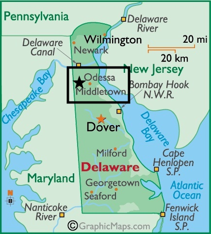

My Neighborhood is...
Middletown, Delaware!

Middletown, DE is in the county of New Castle in the second smallest state in the U.S.A. Middletown is a booming town above the state capital. It is 1 hour away from Philadelphia, 1.5 hours from Balitmore, and 3 hours away from New York City.
Middletown is home to the Olde Tyme Peach Festival, an annual tradition that attracts tens of thousands of visitors each August. Main Street in the center of town is closed to traffic and activities begin with a parade down the street. Other entertainment includes local art and historical exhibits, live music, crafts, games, and a variety of food including limited time peach flavored treats. There is also a 5k run/walk on the same day of the festival, where all proceeds are donated to benefit the local sports boosters.
Middletown also hosts an annual Hummers parade. The parade's name is a spoof of the nearby Philadelphia Mummers parade. As opposed to the Mummers, which is judged seriously, the Hummers dress up and make fun of all the popular news headlines, political, celebrity, and local happenings of the year.

Parks in Middletown, DE
Local Eats
- Crooked Hammock Brewery
- Cantwell Tavern
- Two Stones Pub
- Metro Pub and Grill
- Sushi Yama
- Caruso's Bistro
Entertainment
Middletown, DE might not be known for much but this quaint old town is home of the Everett Theatre. This small theatre located on Main street in Middletown was the film location for Robin William's classic, Dead Poet Society. Learn more about the Everett Theatre and other Middletown filming locations